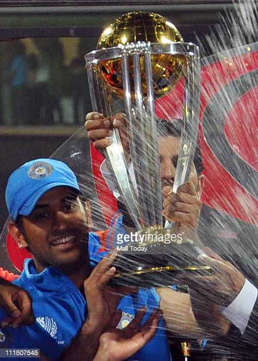
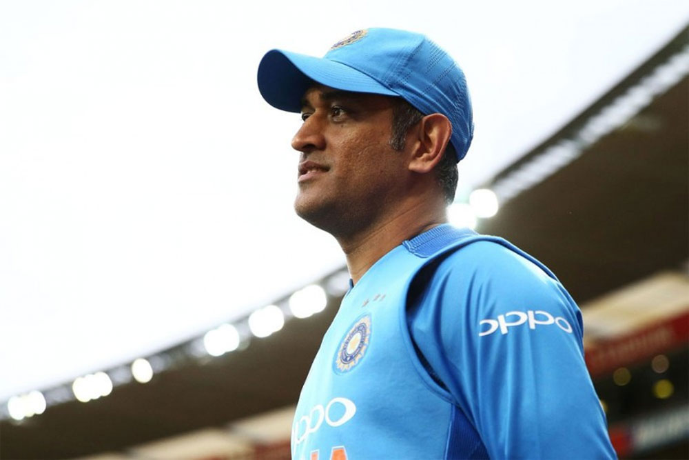
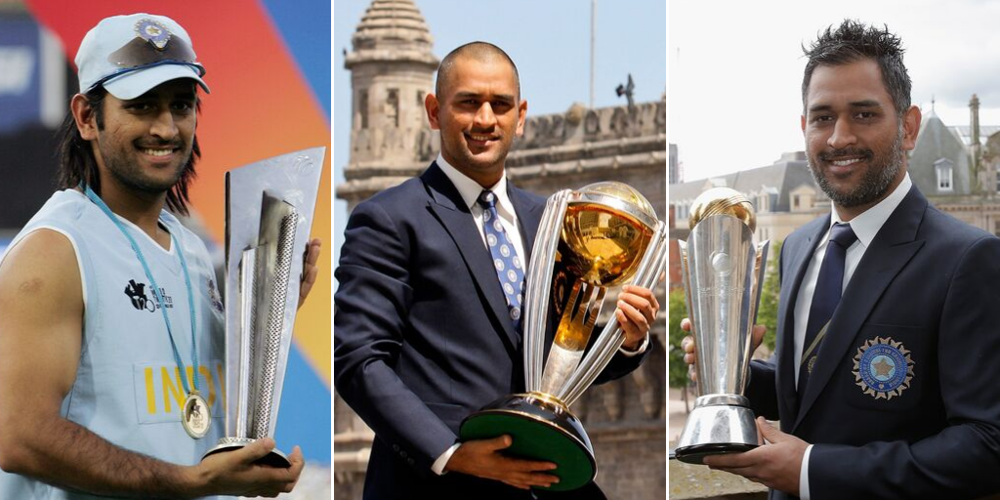
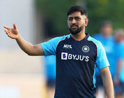

commonly known as MS Dhoni and Mahi, is an Indian cricketer player and was a former captain of the Indian cricket team. Dhoni is a right-handed batsman.


About
Born:- 7 July 1981 (age 41)Ranchi, Bihar (present-day Jharkhand), India
Children:- 1 children; Parent(s):- Pan Singh-Devaki Devi

Education
DAV Jawahar Vidya Mandir, Ranchi
Mahendra Singh Dhoni completed his schooling at DAV Jawahar Vidya Mandir, Ranchi. MS Dhoni had secured 66 per cent marks in high school and 56 per cent marks in the intermediate examination. In 11th-12th, he has also gone out of Ranchi many times to play matches. For this, he used to take permission from his father.

Awards
Padma Bhushan (2018)
Padma Shri 2009
ICC Men's ODI Cricketer of the Year 2009, 2008 ICC Men's ODI Team of the Year 2014, 2013, 2012,
LG People's Choice Award 2013
MORE ABOUT HIM
The Indian cricket team won the 2011 Cricket World Cup under his captainship.
He is widely considered one of the greatest captains, wicket-keeper-batsman
and finishers in the history of cricket.
He plays as a right-handed wicket-keeper-batsman and is known for his calm
captaincy and his ability to finish matches in tight situations. He is also the current captain of Chennai Super Kings in the Indian Premier League.
Born in Ranchi, Bihar (now in Jharkhand) His exceptional wicketkeeping skills allowed him to become the regular wicketkeeper at the Commando Cricket Club (1995–1998),
In 1998, Dhoni was selected by Deval Sahay, a former Bihar Cricket Association Vice President and Ranchi District Cricket President, to play for the Central Coal Fields Limited (CCL) team
The Indian ODI team in the early 2000s saw Rahul Dravid as the wicket-keeper to ensure that the wicket-keeper spot didn't lack in batting talent.[59] The team also saw the entry of wicket-keeper/batsmen from the junior ranks.
his achieveents were tremendous and remarkable.A movie is also been shootef in his name